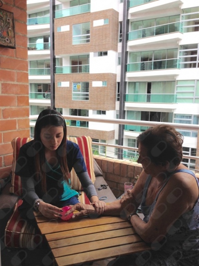

Conoce nuestro espacio


Instalaciones equipadas para tu recuperación
Rehabilitación a domicilio para adultos mayores, pacientes postquirúrgicos y personas con movilidad reducida. Sin desplazamientos, sin esperas: la terapia llega a ti.

Cada plan de tratamiento se diseña según tu condición, tu espacio y tu ritmo, con seguimiento en cada visita.
Movilidad, equilibrio y fuerza para adultos mayores: prevención de caídas y más autonomía.
Recuperación guiada en casa después de cirugías ortopédicas o de reemplazo articular.
Acompañamiento en secuelas de ACV, Parkinson y otras condiciones neurológicas.
Terapia manual y ejercicio terapéutico para dolores de espalda, cuello y articulaciones.
Cuéntame tu caso o el de tu familiar y resolvemos todas tus dudas sin compromiso.
Agendamos la primera visita: evalúo tu condición y diseñamos juntos el plan de tratamiento.
Sesiones periódicas en casa con objetivos claros y reporte de avances para ti y tu familia.
Soy fisioterapeuta especialista en atención domiciliaria en Medellín. Creo que la mejor rehabilitación ocurre donde el paciente se siente seguro: su propio hogar. Por eso llevo la consulta hasta tu puerta, con el mismo rigor profesional de una clínica.
"Llegué con dolor lumbar crónico y en pocas sesiones noté una mejoría real. El equipo es muy profesional y el trato, cercano."Lucía R. · paciente de Dra Maria Andrea Rios
8:00 a.m. – 7:00 p.m.
9:00 a.m. – 1:00 p.m.
Solo con cita previa. Escríbenos por WhatsApp para confirmar disponibilidad.
Consultar dirección exacta al agendar
Atiendo en Laureles, El Poblado, Envigado y en general toda el área metropolitana. Escríbeme tu ubicación y te confirmo cobertura.
No, yo llevo todo el material necesario para la valoración y el tratamiento. Solo necesitas un espacio cómodo para trabajar.
Sí, es una de mis especialidades: pacientes postquirúrgicos, adultos mayores y personas con movilidad reducida que no pueden desplazarse a un consultorio.
Escríbeme por WhatsApp contándome tu caso o el de tu familiar. La primera asesoría no tiene costo y coordinamos la visita según tu disponibilidad.
+57 304 563 0025
Medellín y área metropolitana
(servicio a domicilio)
Lunes a sábado, con cita previa
Disponible en Doctoralia
Escríbeme por WhatsApp y te respondo personalmente. La primera asesoría no tiene costo.
Escribir por WhatsApp Ver perfil en Google Maps